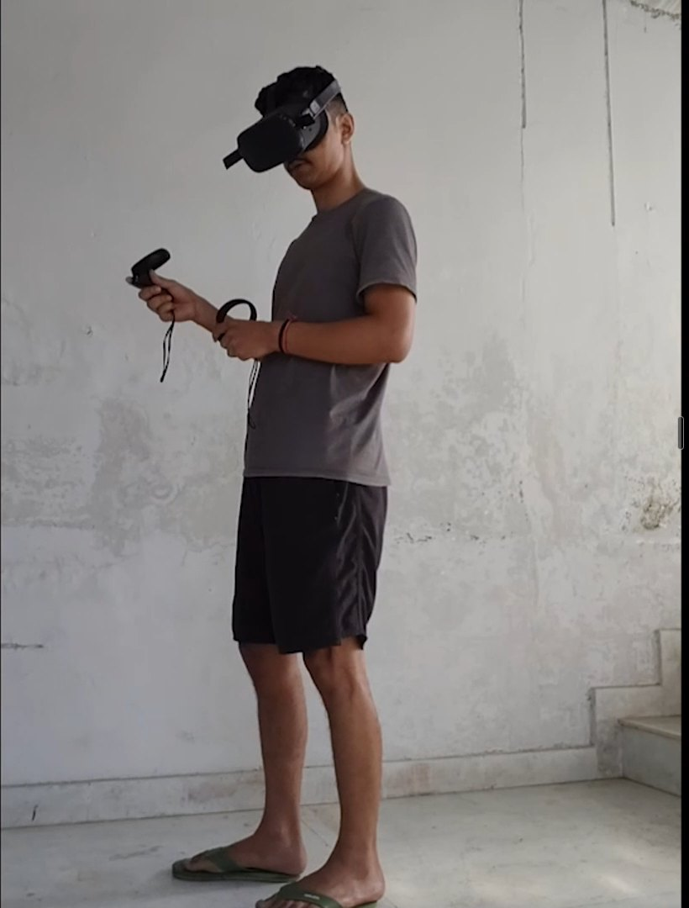
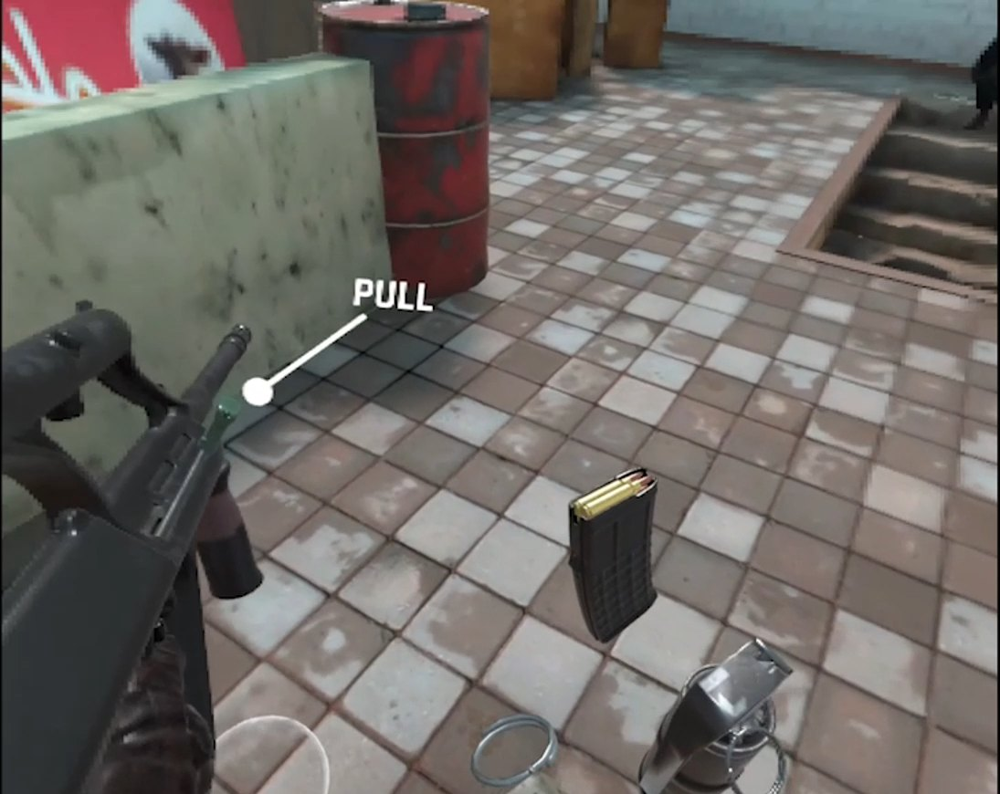
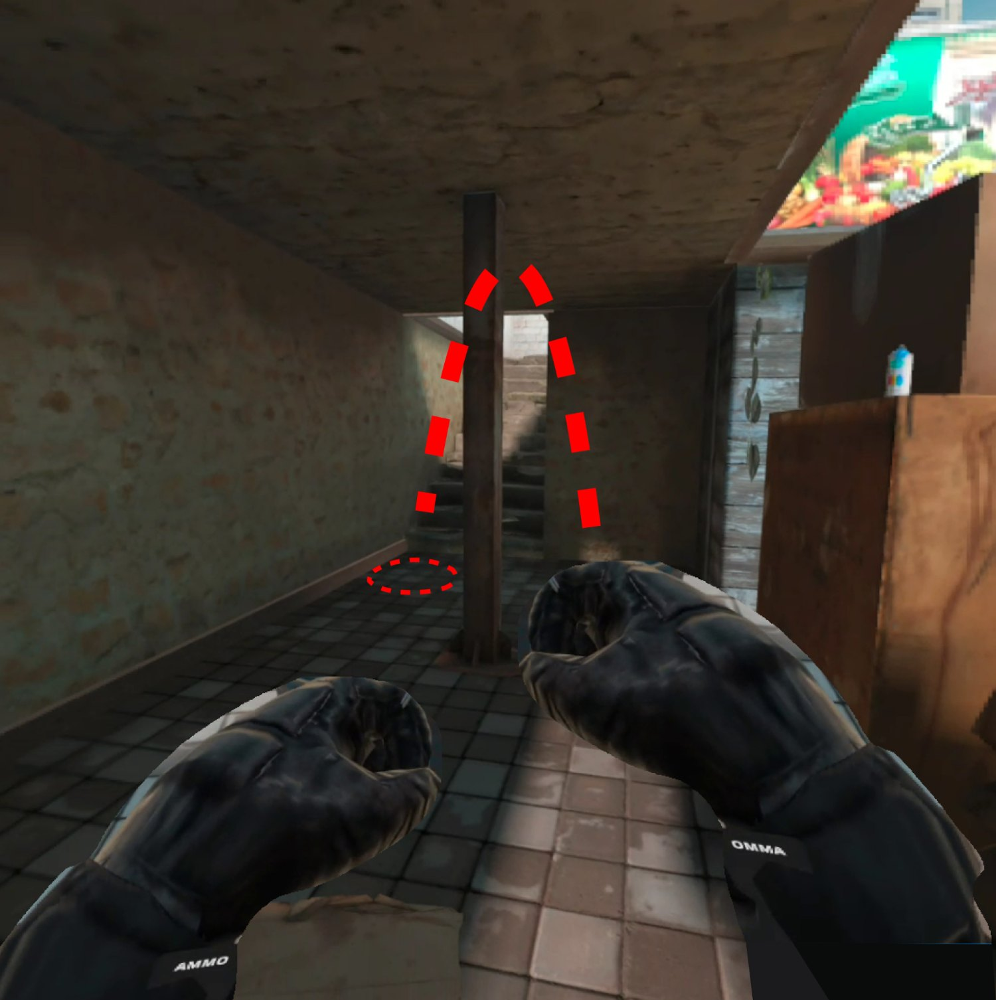
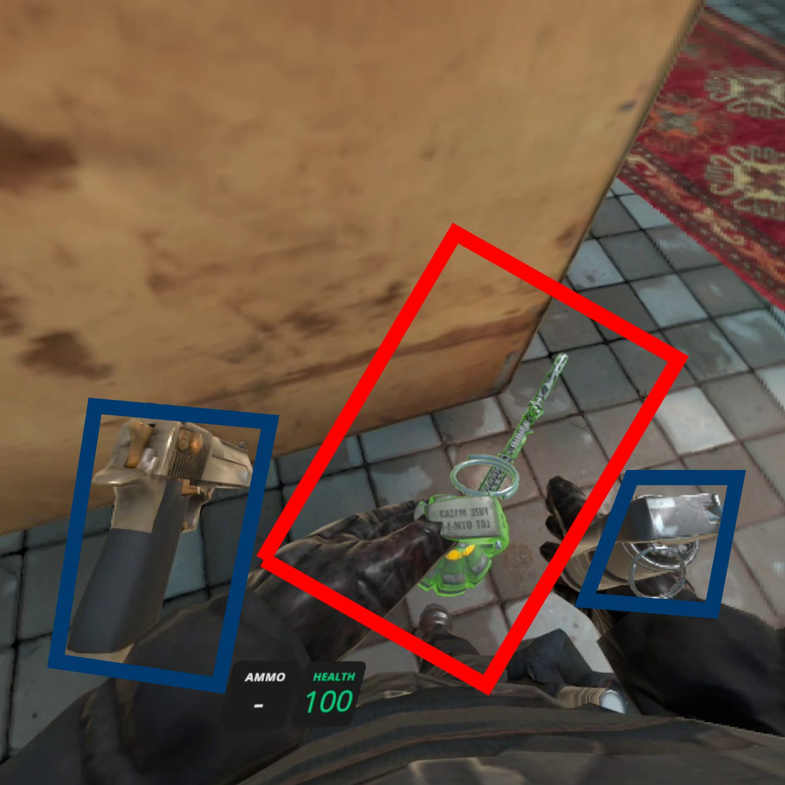
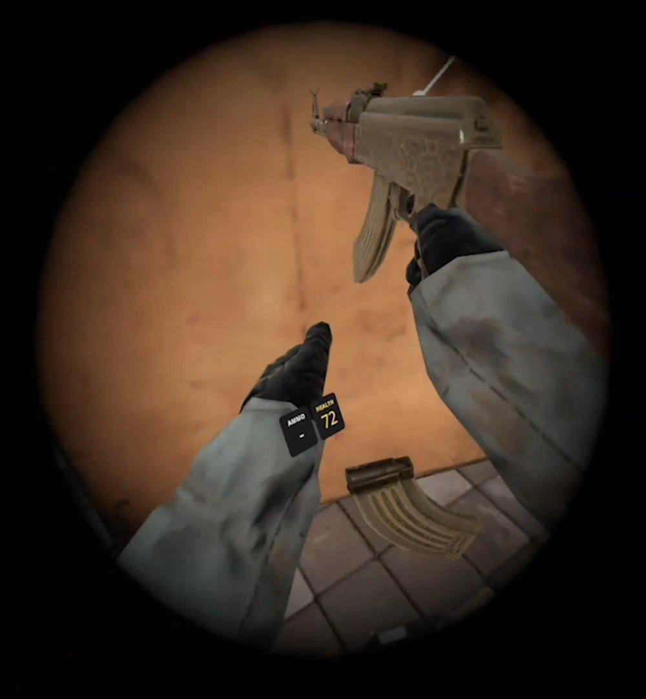
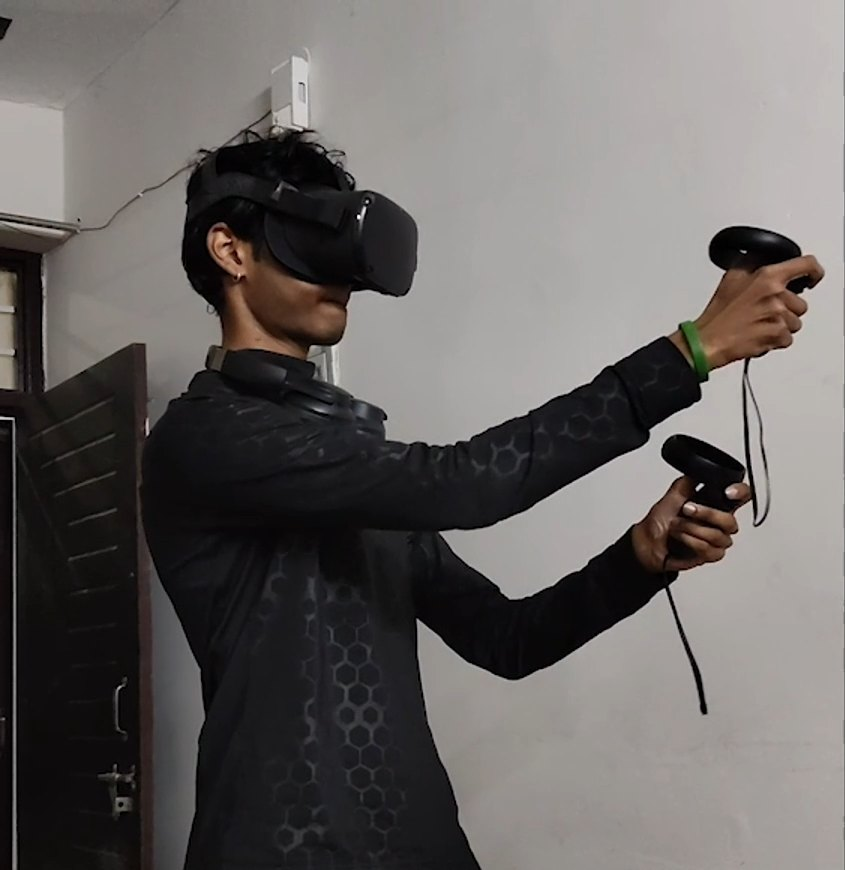
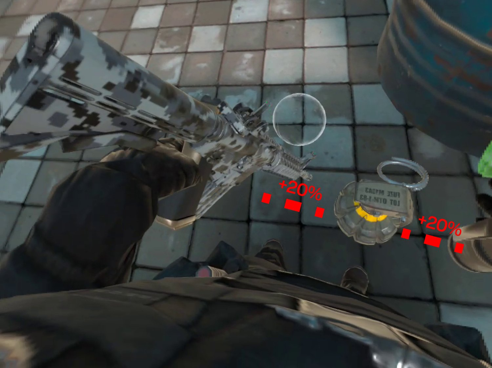

A usability study of how eight people new to virtual reality learned — and physically struggled with — the rules of a tactical VR shooter.

Body cam · real world

Headset POV · virtual world
0.0The same moment, seen from both sidesStitched footage
My role
Ran about half the sessions · stitched body + headset footage · wrote the final report · joint analysis and proposals
Team
Parthiv Nair · Dipesh Ganchhakki
Study
8 VR novices · Meta Quest 1 · repeated-measures, ~20 min each
Overview
AimXR turns button presses into physical actions: grabbing gear from your body, reloading by hand, pulling pins, judging throws. People new to VR arrive with expectations from the real world and from ordinary games. Sometimes those match the game's rules. Often they don't.
We watched eight novices play, recorded both their bodies and their headset view, and measured how capable and how sick they felt across two rounds. This is an academic study. The four changes at the end are proposals, not shipped work.
01Before testing
AimXR doesn't ask you to press reload. It asks you to reload
After a week exploring apps on the headset, we chose AimXR because it asked the most of a new player — spatial awareness, physical coordination and unfamiliar rules, all under simulated combat pressure.
Core task · survive one combat encounterFour steps, four physical rules
01
NavigateThumbsticks move and turn you through the map. Your real body stays exactly where it is.

02
EquipReach down to your chest or belt and physically grab the weapon you want.

03
Reload
1 · Eject mag (B)2 · Reach to belt3 · Snap into gun4 · Rack the slide

04
Deploy a throwableGrab it. Work out how this particular item is activated. Judge the arc. Throw — and let go at the right moment.
02Who we tested
Experts learn around bad interfaces. Novices collide with them
Experienced VR players have muscle memory and workarounds, so they stop noticing awkward controls. New players don't have that cover — every unclear rule shows up immediately, which is exactly what we wanted to see.

Room fully hiddenHands = controllers
2.0Context of useBody cam
Primary persona
The VR novice
ANo established VR muscle memory
BRelies on what's visible to know what to do next
CLearning the physical rules and the game's rules at once
DWants the realism — and is the most likely to feel sick from it
03The experiment
To understand the experience, we had to watch two realities at once
Eight novices, one at a time, in an empty room. Two rounds of play, measured after each — so we could see whether the experience got better with practice, or worse with time.
T0 · SetupIsolated roomConsent, headset fitted
Session ATutorial + first combat roundThe baseline
Form · round 1GEQ + VRSQHow did that feel?
Session BThrowables + weapon swapsMore strain, more rules
Form · round 2GEQ + VRSQ + open questionsPlus their own words
The next participant only entered once the previous one had finished every form, so nobody's answers were shaped by someone else's.
GEQ — Game Experience QuestionnaireStatements like "I felt skilful", rated 0–4. We focused on how capable, absorbed and in-the-zone players felt.
VRSQ — VR Sickness QuestionnaireNine symptoms, grouped into eye strain (oculomotor) and dizziness or nausea (disorientation). Shown as 0–100%.
Questionnaires say how it felt afterwards. Footage shows the moment it happened.
We recorded each session twice: the headset's own view, and a camera on the player's body. I stitched the two into one synced timeline, so we could see what the player physically did and what the game showed them in the same second.
Body cam · what the player did
Headset POV · what the game showed
3.0One frame of the stitched footageVideo still
04The first crack
The instruction was visible. Players still didn't see it
In the footage, players kept trying to fire an empty gun while the game was telling them, on screen, how to finish the reload. Scroll through two moments.
Body camHeadset POV
{{ obsTag }}{{ obsHead }}{{ obsBody }}
4.0Two frames from the stitched footage — notes describe only what's visibleScroll sequence
Key insight
Visible isn't the same as noticed. In a headset, a small label near the gun competes with enemies, orientation, controller actions, body position and the state of your weapon — all at once.
Observed in footage — not a measured finding. It set up the question for everything after.
05The body responds
And the friction wasn't only in the head
I expected motion sickness to take at least ten minutes to appear. Some players reported nausea and a sense of falling much earlier. In VR, the game can show you moving while your real body stands still — your eyes say one thing, your inner ear says another.
“when i was trying to move i felt like as if i am falling down.”
P7 · post-task questionnaire, verbatim
P6“while playing the game i felt dizzy — specifically when i was turning”
P3“the second level of the game was a bit hectic and it made me nauseous”
P5“the overall experience was really nice but the eye strain was a bit too much”
Vestibular mismatch — conflict between what you see and what your balance system feels. Quotes reproduced as written.
06The data
It didn't just feel difficult. For some players, it got worse
Measuring twice showed something one session would have missed: practice helped some people, while others felt less capable and more unwell as time went on.
After the first round, one player was already in severe visual discomfort{{ countA }}%Peak eye strain (VRSQ oculomotor), P8 after Session A — over 3× the 25% severe line. P5 matched it after Session B.
Players who said, unprompted, that items were cluttered or they grabbed the wrong one{{ countB }} of 8P2 · P6 · P8 — open responses
P3 felt noticeably less capable in the second round than in the first{{ countC }}GEQ competence, 2.2 → 1.0 on a 0–4 scale. Tied with P8 (3.0 → 1.8).
Eye strain, round 1 → round 2
Each line is one person. Past 25%, the report's scale treats discomfort as severe.
025%100
R1 → R2
{{ r.id }}
{{ r.label }}
6.0○ after A · ● after B · red = worseVRSQ
How capable players felt
Practice helped some a lot. Others dropped below the scale's 2.0 "moderate" baseline.
02.04
R1 → R2
{{ r.id }}
{{ r.label }}
6.1○ after A · ● after B · red = less capableGEQ
Computed from raw responses. Oculomotor = discomfort + fatigue + eyestrain + focus, out of 12. Competence = mean of 5 items. 5 of 8 were above 25% eye strain after Session B. P5 rose 1.6 → 3.4 in competence but reported severe eye strain.
n = 8Directional usability evidence, not population-level statistics. These numbers show where to look — not how big the effect is for everyone.
07Four failure modes
Four places where the body and the game stopped agreeing
An early expert review flagged four risks. We only kept a pattern once it showed up in both the questionnaires and the footage. Each moves from what we saw, to the evidence, to what we think it means.
01
The body couldn't find the right object
Fitts's law · target selection
Observation
Items on the belt sit close together. Under pressure, players reached for one and came back with another — or with nothing.
Evidence · 3 of 8
“all things were cluttered in front of the player thats why i was unable to pick desire items” P8
“a bit too close to each other” P6
Interpretation
You reach for your belt without looking. Small targets packed tightly together are easy to miss when you can only feel for them.
02
Three throwables, three different rules
Mental-model consistency
A grenade, a Molotov and a flashbang belong to the same category. Each expected the player to use it differently — so novices had to relearn the game every time they switched.
“i was unable to lit up the molotov because i dont know how to light it” P8 — abandoned the task
Interpretation
Once you've learned one throwable, you expect the next to work the same. When it doesn't, the rule you just learned works against you.
03
The player couldn't feel the physics
Missing kinesthetic feedback
Evidence · P7, P1, P2, P8
“When i tried throwing a grenade i aimed it to the enemy position but it didn't reach them.” P7
“I had difficulty aiming for the throw” — P1 · “it is difficult to throw the item” — P2 · “it dose not went to desired position” — P8
Observation
A real grenade has weight. A controller doesn't change when you're holding one, so players had to guess how hard to throw and when to let go.
Interpretation
The aim felt right to the body. The game's physics disagreed — and gave no clue why.
04
Movement looked right. The body disagreed
Vestibular mismatch
Observation
Turning and sideways movement made some players dizzy. Some coped by freezing in place — giving up movement to avoid feeling sick.
Evidence · P4, P6, P7
P4 and P6 named turning as what made them nauseous. P7 described falling while moving. Disorientation sat above the severe line for 5 of 8 after Session B.
Interpretation
AimXR darkens the edges of your view to reduce sickness — but only when you move forward. Turning and strafing got no protection.
08Proposals
If the interaction is physical, the feedback has to respect the body
Each proposal tries to close the same gap: between what the player's body expects and what the game actually does.
Proposed · not implemented in the live game
8.1 · Dynamic spatial bufferingResponds to failure mode 01

8.1aCurrent belt layout, annotated with the proposed +20% spacingAnnotated still
Give the hand more room
Spread the belt slots 20% further apart, so a reach that's slightly off still lands on the right item.
The headset also knows where you're looking. If you're looking at a target while reaching blindly for your belt, the game could slightly enlarge the grab zone of your main weapon — forgiving small misses.
Gaze assist · requires prototype validation
8.1bHow gaze could change grab-zone size and priorityConcept
8.2 · One interaction languageResponds to failure mode 02
Same kind of object, same action
Every throwable becomes one-handed and is activated the same way. Learn it once, use it everywhere.
1 · Grab2 · Activate3 · Throw
GrenadeOne handTo mouth, pull pinRelease
MolotovOne handPre-lit on grabRelease
FlashbangOne handTo mouth, pull pinRelease
Highlighted = changed from today's game
A participant got there first“moltov will lit up automatically”P8, asked what one interaction they'd fix
Same logic, applied to reloadingLarger snap zones where the magazine clicks in, on every weapon — and a short controller vibration confirming it's in, so the body can feel it without looking.
8.3 · Post-throw trajectoryResponds to failure mode 03
8.3A dashed arc traces the throwable's path after releaseConcept
Don't predict the throw. Show what it actually did
The moment a throwable leaves your hand, a dashed line traces its path. You see where it went — short, long, off to the side — and adjust the next throw. P7 asked for a visible projectile path; we weighed showing it before versus after.
Aim line before the throw
Easiest to aim; what P7 asked forDoes the aiming for the player — the skill disappears
Arc after the throw
Keeps the skill with the playerGives the feedback the controller can'tThe first throw is still a guess
Proposed
8.4 · Omni-directional vignetteResponds to failure mode 04
A vignette that follows every movement
Darkening the edges of your view reduces motion sickness. AimXR only does it when you move forward. We propose triggering it for any artificial movement — turning, strafing, falling — and making it stronger the faster the camera moves. Try it.
Current AimXR{{ curLabel }}
Proposed{{ propLabel }}
8.4Illustrative simulation on a game frame — not an in-game renderInteractive
09Traceability
Every proposal starts with something a player said or did
{{ c.n }}
Observed · {{ c.who }}{{ c.obs }}
↓
Interpreted{{ c.interp }}
↓
Principle{{ c.principle }}
↓
Proposed{{ c.prop }}
10What this study can't claim
Eight people can expose a problem. They can't prove the solution
Eight participantsEnough to show direction, not statistical proof.
One game, one headsetAimXR on Meta Quest 1. Results may not carry over to other hardware.
Nothing was builtNone of the four proposals were implemented in the live game.
Untested ideasGaze-assisted grab zones and the post-throw arc need prototyping, then a comparison test against the current game.
11What I'd test next
Same protocol. Two versions. New players
Group ACurrent AimXRToday's belt, throwables and vignette
Measure both
GEQ competencefelt capableVRSQ oculomotoreye strainTask completionfinished?Interaction errorswrong grabsTime to recoverafter a mistake
Group BProposed interactionA prototype of the four proposals
And I'd run it betterMore participantsCharging planned around sessionsMore camera angles
12Retrospective
The most useful data wasn't always inside the headset
01The body footage made moments readableA headset recording can't show a hand hovering over the wrong part of the belt, a reach that misses, or someone standing very still to stop the room spinning. Side by side, those moments became something we could point at — and ask about.
02Measuring twice changed the storyA single session would have shown a game that was hard to learn. Two showed that for some players it got harder — and more uncomfortable — over time.
03VR research is slowSessions ran far longer than planned, and the headset's battery meant pausing to recharge between participants, which stretched testing out further still.
04Participants proposed fixes tooP8 suggested an auto-lit Molotov; P7 asked to see the grenade's path. Two of our four proposals started in the open responses.